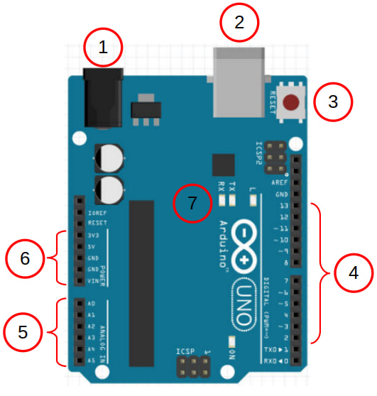
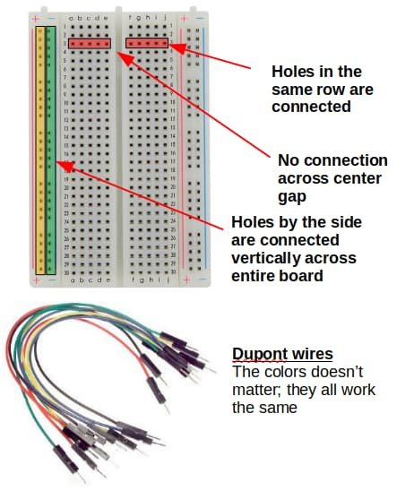

Pins and Wirings
Arduino

| # | Description |
|---|---|
| 1 | Barrel plug for powering the Arduino. If you supply power through here, the supply voltage needs to be between 7V to 12V. |
| 2 | USB socket. Use this to connect the Arduino to the computer. You can also supply power to the Arduino through here (5V only). |
| 3 | Reset button. Press this to reset the Arduino; it'll run setup again before running loop. |
| 4 | These are the GPIO pins 2 to 13. Pins 0 and 1 are also GPIO pins, but they are normally used for Serial. Pins with a tilde ~ next to them can be used as PWM outputs (...using analogWrite) |
| 5 | These 6 pins are capable of analog inputs. This means that they can read a voltage from 0V to 5V. They can also be used as normal GPIO pins. |
| 6 | Vin You can supply power to the Arduino through this pin (7V to 12V). If powered through other means, this pin will be at the same voltage as the power supply. 5V This pin provides 5V; useful for powering external components. 3V3 This pin provides 3.3V; some external components will need to be powered by this. GND This is the Ground pin. It's like the negative pole on a battery. There is one more Ground pin on the other side of the board next to pin 13. |
| 7 | These are the TX, RX, and L LEDs. The TX and RX LEDs will light up when the Arduino is transmitting or receiving data over Serial. The L LED is connected to pin 13. |
Breadboard
Breadboards and dupont wires provides and easy way to connect components to your Arduino.

Pay attention to how the holes in the breadboard are connected to each other.